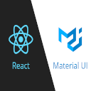

Chowfeed
*UNDER DEVELOPMENT*
I am a full stack web developer. Some people describe me as a kind, selfless, team oriented person, a great teacher, and a proactive leader. I love to code and have since I was young. A natural problem solver. I often see opportunities to create web apps when I hear people unhappy about things that they are finding difficult to do. I love creating web apps that are practical, solve problems and are useful.
*UNDER DEVELOPMENT*
Full stack website using React ExpressJS NodeJS Postgresql. Final group project for EDA.
Simple blog that uses basic HTML, CSS and javascript.
Full stack website using React ExpressJS NodeJS MongoDB.
React website that uses youtube api to search for videos. Up to 15 videos per search with a next button to browse more.

A simple to do list with the use of HTML, CSS, Javascript, NodeJS, ExpressJS and MongoDB.

A game where you have to click the active color after the game picks one to proceed to the next level. Deployed on Github's hosting webpage.

a Server side experimental website deployed in heroku.com with features such as authentication, authorization, password change, posting deleting editing items and posting deleting editing comments. Html, Css (Bootstrap 4.2), nodeJS, expressJS and MongoDb were used for this production.
Programming languages
 |
 |
 |

|

|
 |

|
Libraries, Packages and Frameworks
|  |
|

|

|

|

|

|
|
Enspiral Dev Academy - WEB DEVELOPMENT BOOTCAMP - Newmarket, Auckland New Zealand 2020
Postgraduate Diploma in Management- level 8 (Information Technology), Toi Ohomai Institute of Technology, Rotorua New Zealand 2018
Bachelor of Science in Business Administration, (Computer Applications Major), De La Salle University College of St. Benilde, Philippines 2005
Enspiral Dev Academy (Feb 3, 2020 – May 16, 2020) - Pairing programming while learning new technology; We created new apps based on the technology assigned to us; We enforced git version control on each app; I collaborated with my pair remotely and planned the most efficient way to finish our app within our set time limit; We provided each other with growth feedback at the end of each programming session. I also participated in and completed weekly group projects assuming various roles such as lead, team member, project owner; Using a competent tech stack including React, Node.js, Express.js, SQL (Postgres); Our projects required layout planning and wireframing where we assigned members different roles; We practiced git version control as well as assigning a member to be a Git lead; We followed and applied agile principles and used scrum practices; We did our own testing using testing libraries such as jest and enzyme to increase our code quality; We practiced constant check ins and where one of our members was blocked we worked together to resolve it as a team; We implemented CI/CD in github actions for quality control ; We presented / madea pitch with our final product at the end of each project; Retrospectively after each presentation we provide growth feedback for each team member.
Q-Audit - Data Admin (September 2, 2019 – February 26, 2020) - I managed and maintained sensitive data; managed enquiries from stakeholder and data users; managed document integrity; handled storage in securing documents; populated data fields; structuring and organizing files and managing different accounts to limit access for restricted documents.
IRD - Data Entry Clerk (June 3, 2019 - July 12, 2019) - Migrating information to IRD’s database.
Click the link below to send me an email. You can also contact me through my linkedIn and Github account.